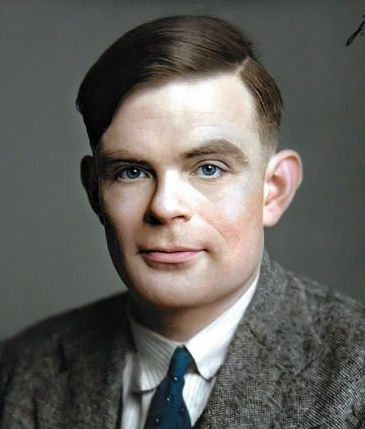

Alan Turing

1912-1954
We can only see a short distance ahead, but we can see plenty there that needs to be done.
Biography
- Alan Turing was born on June 23, 1912.
- He attended St Michael's Primary School where his high intelligence became prominent.
- At the age of 13, Turing attended Sherborne School where he was considered a genius. He also met his "first love" Christopher Morcom, who died of tuberculosis in 1930.
- After graduating, he studied at King's College, University of Cambridge in 1931, where he was highly successful academically and socially. He also joined the Anti-War Council when World War II first began.
- In 1936 Turing went on to study mathematics at Princeton University, New Jersey, where he got his PhD two years later. During his time there, he developed the notion of a ‘universal computing machine’ which could solve complex calculations, later developing into would the Turing machine, a precursor to the digital computer.
- In 1939, Turing was asked to join the Government Codes and Cypher School, a British code-breaking organisation, where he deciphered Nazi Germany's ENIGMA code, allowing the Allied Forces to intercept German messages.
- After the war, Turing was discovered to be in a homosexual relationship. He avoided prison time by instead accepting chemical castration. He was then removed from the code-breaking organization.
- Alan Turing was found dead on June 7, 1954 from cyanide poisoning. It's widely believed that he commited suicide, but could have also been potentially the consequence to accidental inhalation of cyanide fumes during an experiment.